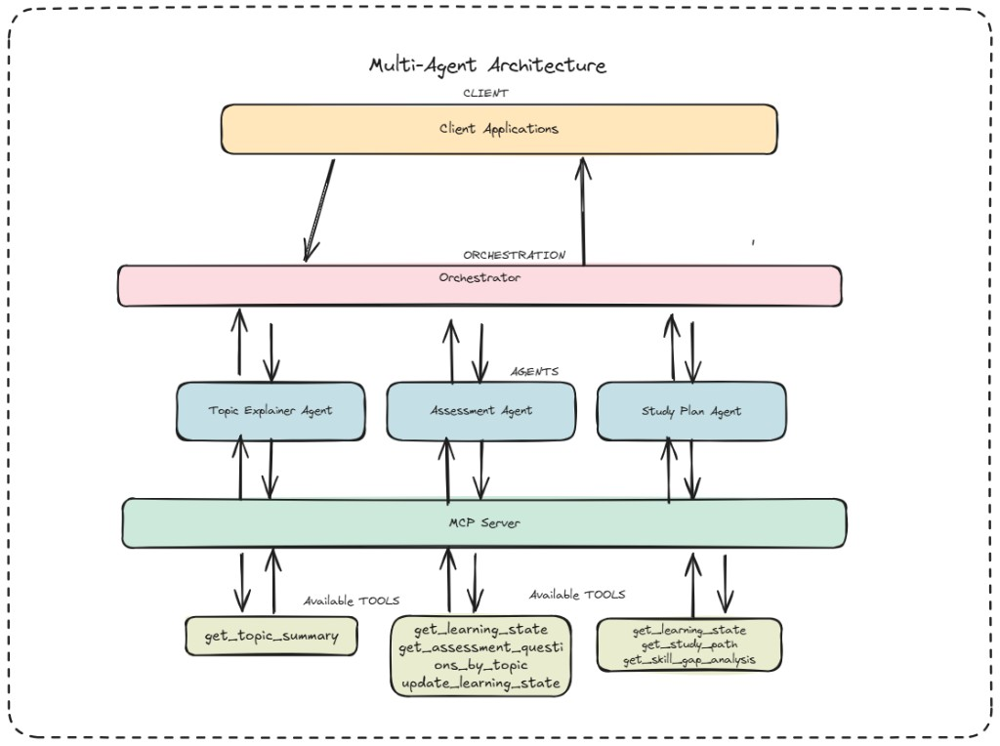
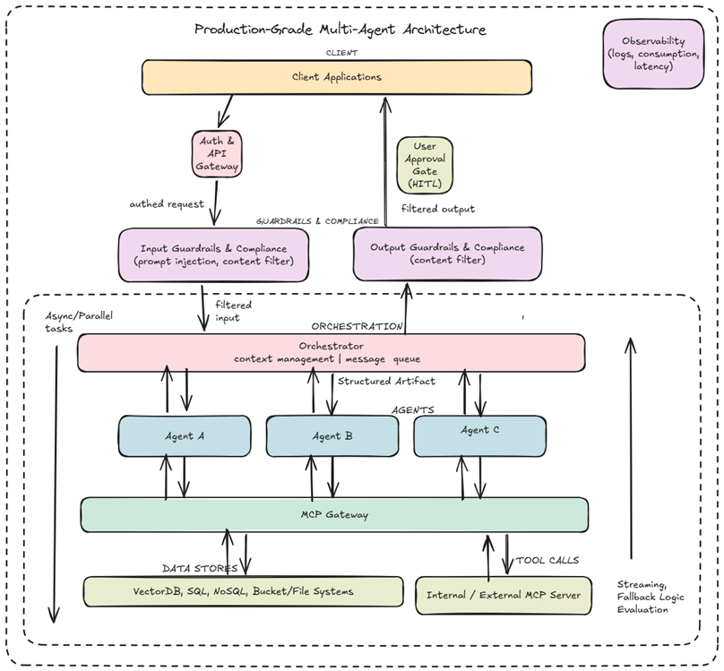

System Architecture
System Flow
All services, ports and protocols · what you will build in this workshop
⚡ What you'll implement
The Assessment Agent (:8092) — a remote A2A agent that exposes skill assess_level. It calls MCP tools to fetch quiz questions, evaluates learner answers via LLM, and returns a structured Artifact back through the A2A task lifecycle.

Request Lifecycle
User sends a request
CLI / pytest / Streamlit posts a message to the Orchestrator via
A2A JSON-RPC. A new context_id is generated and kept for the whole session.Orchestrator scores agents
Tokenises the message, counts keyword overlap with each agent's skill
tags. All agents with score ≥ 50% of the top score are selected and called in parallel.Agent enters its agentic loop
The selected agent receives the message +
context_id. The LLM decides which MCP tools to call, calls them over MCP HTTP, and iterates until it has a complete answer.Artifact returned
The agent wraps its result in a structured
Artifact (new_text_artifact(name, text)) and emits it back as a TaskArtifactUpdateEvent. Task state transitions to completed.Reference
Glossary
Key terms used throughout the workshop, grouped by topic
AI Agent Fundamentals
| Term | Definition |
| LLM | Large Language Model — the AI model that powers an agent's reasoning and decision-making (e.g. GPT-4, Claude, Gemini) |
| AI Agent | Software that receives input, reasons autonomously, and takes actions (tool calls, API requests, etc.) to achieve a goal — without step-by-step human instructions |
| Tool / Tool Call | A function an agent can invoke to interact with the world — fetch data, update state, call an API. The agent decides when to call it and with which arguments |
| Agentic Loop | The cycle an agent runs repeatedly: think → decide → act → observe → repeat until the task is complete or a stopping condition is met |
MCP — Model Context Protocol
| Term | Definition |
| MCP | Standard open protocol for exposing callable tools to AI agents over HTTP. Any agent that speaks MCP can use any MCP Server's tools without custom integration code |
| MCP Server | Server that hosts and exposes tools via the MCP protocol. In this workshop it runs on port 8004, reads local JSON files, and requires no external API keys |
| MCP Tool | A specific callable function exposed by an MCP Server. Decorated with @mcp.tool(tags={...}) in fastmcp_server.py. Example: get_topic_summary(topic, level) |
| FastMCP | Python library for building MCP servers with minimal boilerplate — decorate any Python function with @mcp.tool() and it becomes a callable MCP tool |
A2A — Agent-to-Agent Protocol
| Term | Definition |
| A2A | Standard open protocol for agent-to-agent communication, using JSON-RPC over HTTP. Any A2A-compliant agent can discover and call any other without custom glue code |
| Agent Card | JSON metadata file every agent publishes at /.well-known/agent-card.json. Contains: name, URL, version, capabilities, and Skills. Used by the Orchestrator for discovery and routing |
| Skill | A named capability advertised in an Agent Card. Has an id, name, description, tags, and example prompts. Examples: assess_level, explain_topic, build_study_plan |
| Tags | Keyword list attached to a Skill (e.g. ["quiz", "assessment", "level"]). The Orchestrator matches user message words against Tags to decide which agents to invoke |
| Task | A unit of work in A2A. Every user request creates a Task with a unique task_id. Multiple turns in the same conversation share a context_id |
| Task States |
submitted→
working→
completed/
failed/
input_required
|
| Artifact | Structured output attached to a Task by an agent. Created with new_text_artifact(name, text); the caller receives it as a TaskArtifactUpdateEvent |
| Message | A2A message object: role (user / agent) + parts (list of TextPart) + context_id. Wraps the text payload sent between agents |
| context_id | Conversation identifier generated by the client and reused across all turns in a session. The Orchestrator forwards it to remote agents so they can read conversation history |
| Streaming | Sending response chunks incrementally while processing. All agents declare AgentCapabilities(streaming=True) in their Agent Card |
Project Architecture Terms
| Term | Definition |
| Orchestrator | Central agent that receives every user request, scores all registered agents by keyword overlap against their skill tags, and routes to the best-matching agent(s) |
| Remote Agent | Specialist agent (Topic Explainer, Assessment, Study Plan) that receives a delegated Message from the Orchestrator via A2A and handles a focused task |
| Keyword Routing | Routing algorithm: score = len(user_words ∩ agent_tags). Agents whose score is ≥ 50% of the highest score are all invoked. Implemented in orchestrator_agent/agent_logic.py |
| BaseAgentExecutor | Shared base class in base_executor.py. Bridges each agent's stream() logic to the A2A task lifecycle — reading conversation history, emitting artifacts, and updating task status |
| InMemoryTaskStore | Task storage that lives in process memory. Fast and zero-config, but resets when the server restarts. Used by every agent via DefaultRequestHandler |
| server_factory | Helper in server_factory.py that bootstraps a full A2A Starlette + uvicorn server from just an Agent Card and an Executor class. Every agent's __main__.py calls it in one line |
Production Architecture
Production-Grade Multi-Agent System
How this kind of system is designed at production scale — beyond the workshop scope
📌 Workshop vs Production
The workshop system is a simplified version of this architecture. In production you'd add auth, guardrails, observability, async task queues, and human-in-the-loop gates.

Key Production Additions
Auth & API Gateway
All incoming requests pass through an auth layer before reaching the orchestrator. Handles token validation, rate limiting, and API key management.
Guardrails & Compliance
Input guardrails block prompt injection and harmful content before it reaches agents. Output guardrails filter agent responses before returning to the user.
Human-in-the-Loop (HITL)
A User Approval Gate intercepts agent outputs that exceed confidence thresholds or involve sensitive actions, requiring explicit human approval before proceeding.
Async / Parallel Tasks
The orchestrator manages a message queue and dispatches tasks asynchronously. Agents run in parallel; results are merged and streamed back incrementally.
Observability
Logs, latency metrics, and token consumption are collected per agent and per task. Enables debugging, cost tracking, and performance optimization at scale.
External Data & MCP Servers
Agents connect to VectorDBs, SQL/NoSQL stores, and bucket/file systems for long-term memory. External MCP servers expose third-party APIs as callable tools.